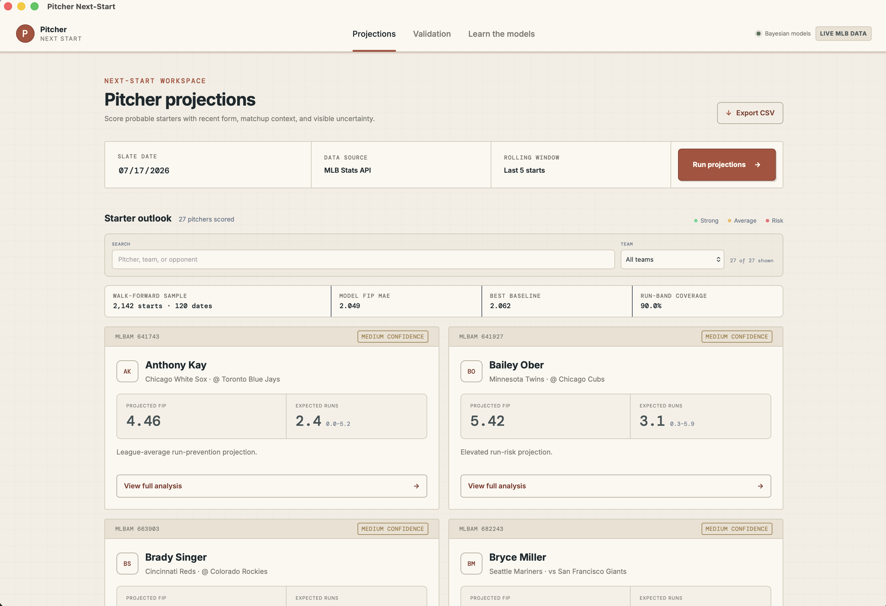
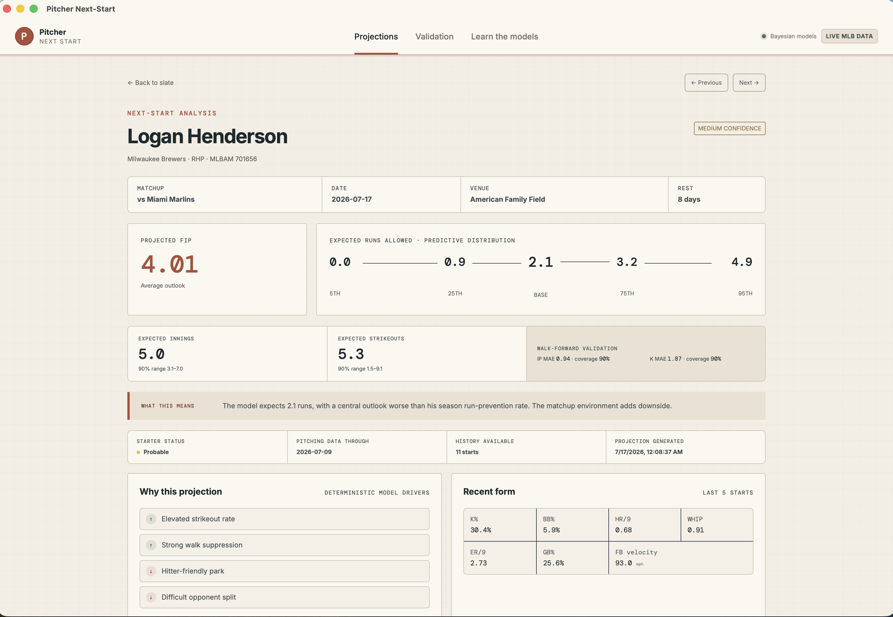

Leakage-safe features
Every historical feature is built only from information available before that start.
Pitcher Next-Start converts public MLB data into calibrated Bayesian projections for expected runs, FIP, innings, and strikeouts.

Each target has its own Bayesian linear model, posterior, and predictive interval. Outputs are never derived from one another.
A full predictive distribution, not a vague confidence score.
A defense-independent view of the expected outing.
Separate innings and strikeout estimates with calibrated bands.
Recent form, park, opponent, rest, workload, and model drivers.

Every historical feature is built only from information available before that start.
Model error is reported beside league, pitcher-average, and recent-form baselines.
Saved predictions can be matched to completed MLB starts so performance stays visible.
This is a research model, not a betting guarantee.